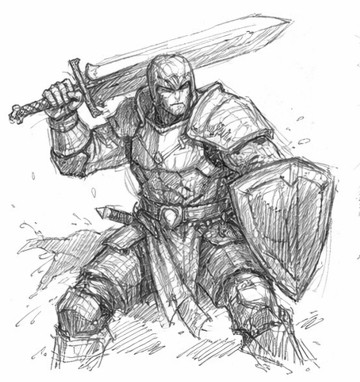

Fighter
Du bist der Fels in der Brandung. Wenn es gefährlich wird, stehst du vorne.
Der Fighter stürzt sich mit einem furchterregenden Schrei in die
Schlacht und hebt sein Schwert, um seine Feinde niderzustrecken. Er
bewegt sich geschickt zwischen seinen Gegnern, wehrt ihre Angriffe
ab und hält ihnen stand, wenn es nötig ist. Er versammelt seine
Kameraden um sich und bildet mit ihnen unerschütterliche Bindungen.
Mit der Rolle des Fighters kannst du alle Arten von
Kampfkunst-Experten spielen. Du kannst ein stoischer Ritter, ein
ruhmsuchender Gladiator, ein erfahrener Veteran, ein meditativer
Boxer oder ein wütender Berserker sein.
- Dueling
- Tactics
- Camaraderie
- Leadership
- Body